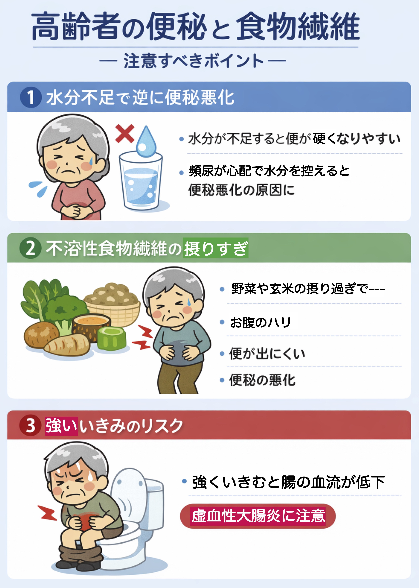

公開日：2026年5月｜最終更新：2026年5月
食物繊維は、便のかさを増やし腸の動きを促進するため、便秘対策として広く推奨されています。 しかし高齢者においては、「摂ればよい」という単純なものではなく、体の状態に応じた注意が必要です。
食物繊維は水分を吸収して便を柔らかくしますが、水分が不足すると逆に便が硬くなります。
野菜や玄米などに多い不溶性食物繊維を摂りすぎると、便の量だけが増え、かえって排出しにくくなることがあります。
便が硬い状態で強くいきむと、腸の血流が低下し、虚血性大腸炎を引き起こす可能性があります。

水溶性食物繊維を中心に取り入れることが大切です。
NG (1) 水分をとらずに食物繊維だけ増やす
食物繊維は水分と一緒に働きます。水分不足のまま増やすと、便が硬くなり逆に便秘を悪化させます。
NG (2) 野菜・玄米ばかりに偏る
不溶性食物繊維に偏ると、便の量だけが増えて腸に負担がかかります。
NG (3) 便が出ないのに強くいきむ
無理にいきむと腸の血流が低下し、虚血性大腸炎のリスクが高まります。
NG (4) 水分を控える（頻尿が心配）
水分を控えることで便が硬くなり、便秘が慢性化しやすくなります。
NG (5) 急に食事内容を変える
急に食物繊維を増やすと、腸が対応できず不調を起こします。
NG (6) 排便を我慢する
便意を我慢すると、腸の反射が鈍くなり、便秘が慢性化します。
誤解１：「食物繊維は多ければ多いほど良い」
→ 正しくは：摂りすぎは逆効果になることがあります。特に水分不足では便が硬くなり、便秘を悪化させます。
誤解２：「野菜を食べていれば大丈夫」
→ 正しくは：野菜に多い不溶性食物繊維だけでは不十分です。水溶性食物繊維とのバランスが重要です。
誤解３：「水分はあまり関係ない」
→ 正しくは：水分は便を柔らかくするために不可欠です。水分不足は便秘の大きな原因です。
誤解４：「毎日出ない＝すぐ異常」
→ 正しくは：排便回数には個人差があります。回数よりも「便の硬さ」「出しやすさ」が重要です。
誤解５：「いきめば出る」
→ 正しくは：無理ないきみは体に負担をかけ、腸の血流低下を招く可能性があります。
誤解６：「高齢だから仕方ない」
→ 正しくは：生活習慣や食事の工夫で改善できるケースは多くあります。